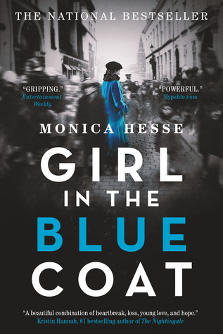
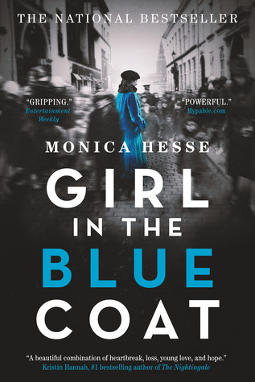

Young Adult
Contemporary, Fantasy, Historical, Mystery/Thriller
Salt to the Sea

Girl in the Blue Coat
The Serpent King

The Tyrant's Daughter

The Walls Around Us

Contemporary, Fantasy, Historical, Mystery/Thriller
Salt to the Sea
Girl in the Blue Coat
The Serpent King
The Tyrant's Daughter
The Walls Around Us
An incredible story. Sepety's writing is both beautiful and heartbreaking.
Winter, 1945. Four teenagers. Four secrets.
Each one born of a different homeland; each one hunted, and haunted, by tragedy, lies…and war.
As thousands of desperate refugees flock to the coast in the midst of a Soviet advance, four paths converge, vying for passage aboard the Wilhelm Gustloff, a ship that promises safety and freedom.
Yet not all promises can be kept.
Inspired by the single greatest tragedy in maritime history, bestselling and award-winning author Ruta Sepetys (Between Shades of Gray) lifts the veil on a shockingly little-known casualty of World War II. An illuminating and life-affirming tale of heart and hope.
Young Adult, YA Historical Fiction
A stunning and heart-wrenching story showing a unique perspective on WWII, and the way it affected the lives of everyone during the time period. A truly unforgettable and utterly incredible story that will stay with you long after you’ve finished reading it.
Amsterdam, 1943. Hanneke spends her days finding and delivering sought-after black market goods to paying customers, nights hiding the true nature of her work from her concerned parents, and every waking moment mourning her boyfriend, who was killed on the Dutch front lines when the German army invaded. Her illegal work keeps her family afloat, and Hanneke also likes to think of it as a small act of rebellion against the Nazis.
On a routine delivery, a client asks Hanneke for help. Expecting to hear that Mrs. Janssen wants meat or kerosene, Hanneke is shocked by the older woman’s frantic plea to find a person: a Jewish teenager Mrs. Janssen had been hiding, who has vanished without a trace from a secret room. Hanneke initially wants nothing to do with such a dangerous task but is ultimately drawn into a web of mysteries and stunning revelations—where the only way out is through.
Beautifully written, intricately plotted, and meticulously researched, Girl in the Blue Coat is an extraordinary, unforgettable story of bravery, grief, and love in impossible times.
This one will bring the tears.
Dill isn't the most popular kid at his rural Tennessee high school. After his father fell from grace in a public scandal that reverberated throughout their small town, Dill became a target. Fortunately, his two fellow misfits and best friends, Travis and Lydia, have his back.
But as they begin their senior year, Dill feels the coils of his future tightening around him. His only escapes are music and his secret feelings for Lydia--neither of which he is brave enough to share. Graduation feels more like an ending to Dill than a beginning. But even before then, he must cope with another ending--one that will rock his life to the core. Debut novelist Jeff Zentner provides an unblinking and at times comic view of the hard realities of growing up in the Bible belt, and an intimate look at the struggles to find one’s true self in the wreckage of the past.
A dark and emotional story that will keep you turning pages and not knowing how to feel.
A girl: Gemma, 16, at the airport, on her way to a family vacation.
A guy: Ty, rugged, tan, too old, oddly familiar, eyes blue as ice.
She steps away. For just a second. He pays for her drink. And drugs it. They talk. Their hands touch. And before Gemma knows what's happening, Ty takes her. Steals her away. To sand and heat. To emptiness and isolation. To nowhere. And expects her to love him.
Written as a letter from a victim to her captor, STOLEN is Gemma's desperate story of survival; of how she has to come to terms with her living nightmare--or die trying to fight it.
A Michael L. Printz Honor Book • ALA Best Fiction for Young Adults • A 2011 USBBY Outstanding International Book
Raw and filled with emotion, a modern and young take on conflict and war.
When her father is killed in a coup, Laila and her mother and brother leave their war-torn homeland for a fresh start in the suburbs of Washington, D.C.
At her new high school, Laila makes mistakes, makes friends, and even meets a boy who catches her eye. But this new life brings unsettling facts to light. The American newspapers call her father a brutal dictator and suggest that her family’s privilege came at the expense of innocent lives. Meanwhile, her mother would like nothing more than to avenge his death, and she’ll go to great lengths to regain their position of power.
As an international crisis takes shape around her, Laila is pulled in one direction, then another, but there’s no time to sort out her feelings. She has to pick a side now, and her decision will affect not just her own life, but countless others. . . .
Suma's writing is beautiful, and the combination with the twisty and psychological plot of the story makes The Walls Around Us a must-read.
On the outside, there’s Violet, an eighteen-year-old dancer days away from the life of her dreams when something threatens to expose the shocking truth of her achievement.
On the inside, within the walls of the Aurora Hills juvenile detention center, there’s Amber, locked up for so long she can’t imagine freedom.
Tying their two worlds together is Orianna, who holds the key to unlocking all the girls’ darkest mysteries . . .
What really happened on the night Orianna stepped between Violet and her tormentors? What really happened on two strange nights at Aurora Hills? Will Amber and Violet and Orianna ever get the justice they deserve—in this life or in another one?
In prose that sings from line to line,Nova Ren Suma tells a supernatural tale of guilt and of innocence, and of what happens when one is mistaken for the other.
Young Adult, YA Mystery/Thriller